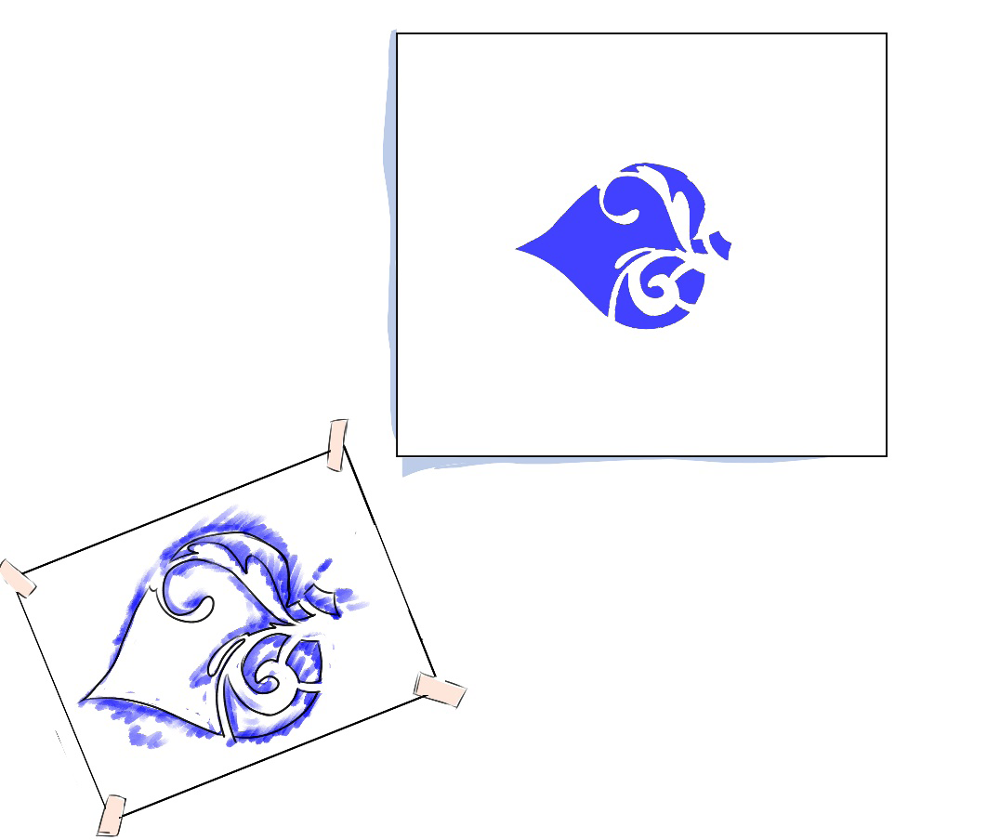

Once the printing process is done the last stage is to remove the stencil from the printed surface for cleaning or continuing working to another surface or using it with a different colour. Figure 4.2 (b) shows a printed surface and a used stencil.


Activity 4.1
Follow the steps described above to make a stencil print of the following:
(i) Animal, (ii) flower.